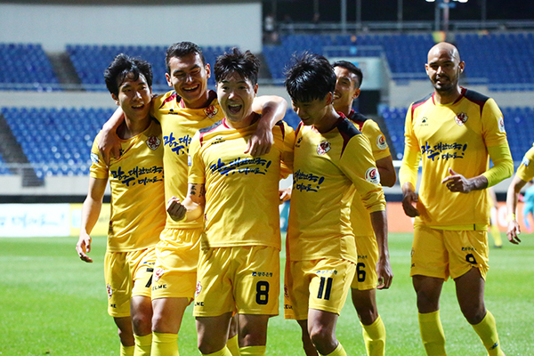
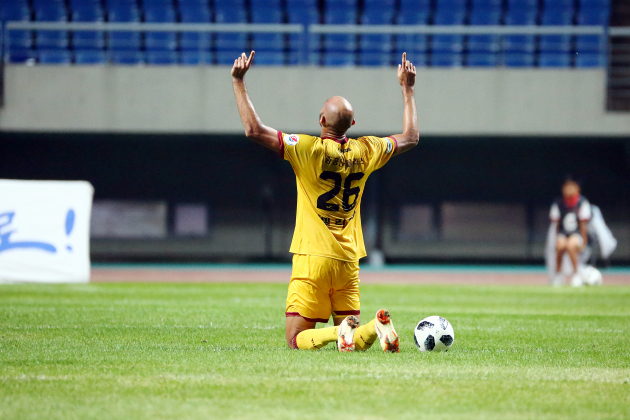
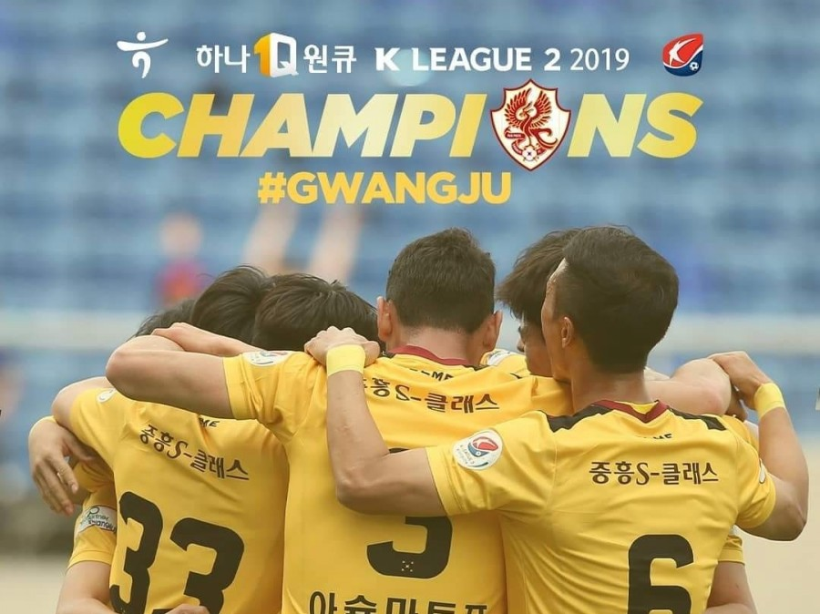

ABOUT 광주FC
감독 및 코치진

선수단

경기기록

개요
K리그2 소속의 프로축구단. 연고지는 광주광역시. K리그 제16구단이자 시민구단이다. 그리고 최초의 강등팀이자 최초의 승격 이후 잔류에 성공한 팀.
광주광역시를 연고로 한 최초의 축구팀으로 탄생하기까지 말도 많고 탈도 많았던 팀이다. 2019년 박지혜와 도주환의 응원에 힘입어 구단 최다 승점을 얻어 K리그 2를 우승하고 K리그 1부에 승격하였다.